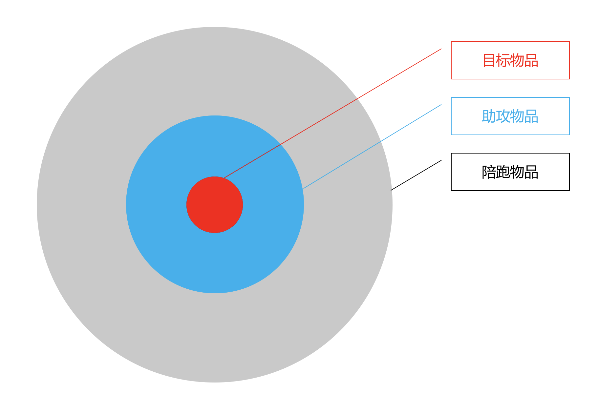
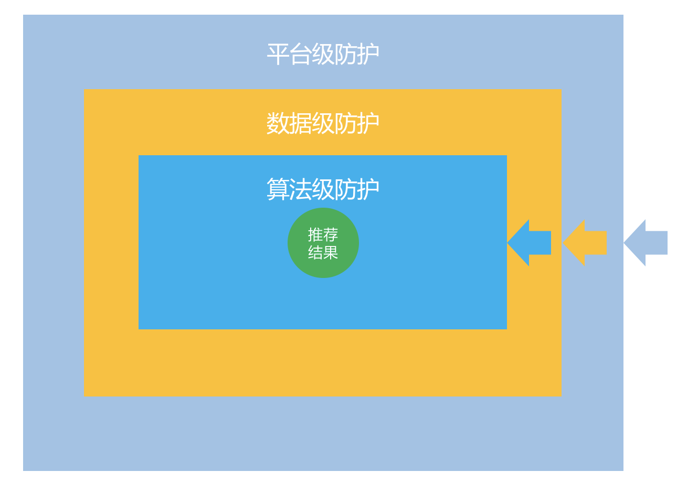

- 00 开篇词 用知识去对抗技术不平等.md.html
- 01 你真的需要个性化推荐系统吗_.md.html
- 02 个性化推荐系统有哪些绕不开的经典问题？.md.html
- 03 这些你必须应该具备的思维模式.md.html
- 04 画鬼容易画人难：用户画像的“能”和“不能”.md.html
- 05 从文本到用户画像有多远.md.html
- 06 超越标签的内容推荐系统.md.html
- 07 人以群分，你是什么人就看到什么世界.md.html
- 08 解密“看了又看”和“买了又买”.md.html
- 09 协同过滤中的相似度计算方法有哪些.md.html
- 10 那些在Netflix Prize中大放异彩的推荐算法.md.html
- 11 Facebook是怎么为十亿人互相推荐好友的.md.html
- 12 如果关注排序效果，那么这个模型可以帮到你.md.html
- 13 经典模型融合办法：线性模型和树模型的组合拳.md.html
- 14 一网打尽协同过滤、矩阵分解和线性模型.md.html
- 15 深度和宽度兼具的融合模型 Wide and Deep.md.html
- 16 简单却有效的Bandit算法.md.html
- 17 结合上下文信息的Bandit算法.md.html
- 18 如何将Bandit算法与协同过滤结合使用.md.html
- 19 深度学习在推荐系统中的应用有哪些_.md.html
- 20 用RNN构建个性化音乐播单.md.html
- 21 构建一个科学的排行榜体系.md.html
- 22 实用的加权采样算法.md.html
- 23 推荐候选池的去重策略.md.html
- 24 典型的信息流架构是什么样的.md.html
- 25 Netflix个性化推荐架构.md.html
- 26 总览推荐架构和搜索、广告的关系.md.html
- 27 巧妇难为无米之炊：数据采集关键要素.md.html
- 28 让你的推荐系统反应更快：实时推荐.md.html
- 29 让数据驱动落地，你需要一个实验平台.md.html
- 30 推荐系统服务化、存储选型及API设计.md.html
- 31 推荐系统的测试方法及常用指标介绍.md.html
- 32 道高一尺魔高一丈：推荐系统的攻防.md.html
- 33 和推荐系统有关的开源工具及框架介绍.md.html
- 34 推荐系统在互联网产品商业链条中的地位.md.html
- 35 说说信息流的前世今生.md.html
- 36 组建推荐团队及工程师的学习路径.md.html
- 加餐 推荐系统的参考阅读.md.html
- 结束语 遇“荐”之后，江湖再见.md.html
- 捐赠
32 道高一尺魔高一丈：推荐系统的攻防
毫无疑问，推荐系统是一种流量操控手段，所以其运转需要满足平台方的利益。
为了这个目的，推荐系统通过科学的手段建立起一套运转规则和逻辑，希望平台内的各方能够皆大欢喜，物品生产方能源源不断地生产物品，消费方能孜孜不倦地消费。
当然这里的物品和消费都是泛指，物品可以是内容、商品、娱乐方式、甚至是人等等，消费也不定是直接掏钱，花时间也是一种消费。
既然推荐系统是某一方流量诸侯的运转规则，那么就不能不考虑到在其诸侯封地之内会有刁民闹事、钻营规则的漏洞，从而达到自己的目的。
攻和防
用行话说，就是推荐系统也会受到攻击，推荐系统也是一种软件，只要是软件，就一定有安全问题，推荐系统也不能免俗。
如果推荐系统非常脆弱，容易受到攻击，那么推荐系统就不是为平台利益而运转，而是为攻击者利益而运转，推荐系统不过是个傀儡，前面讲到的那么多酷炫的算法也就成了摆设，想必正在听课的你会瑟瑟发抖吧？
让前面讲到的所有算法、架构起到它该起的作用；让那些指标数据反映真实的效果，这两件事都很重要。推荐系统如果被攻击也就需要被防护，因此，我今天就和你讨论一下推荐系统的攻防这个略带黑色的话题。
攻击
知己知彼，百战不殆。要更好地守护你的推荐系统，就需要先了解别人会怎么攻击你的推荐系统。在推荐系统攻防研究领域，被研究得最为彻底的就是针对协同过滤的攻防。
为什么呢？一方面是协同过滤本身就应用广泛，另一方面是针对协同过滤的攻击容易生效。
我们先概略认识一下推荐系统的攻击是怎么回事，然后再认识一下攻击怎么做。
有人对身为流量控制器的推荐系统攻击，并不是他吃饱了没事做，来帮你测试系统，根据“无利不起早”这条社会公理，攻击方一定是想扶持或者打压某些物品，从而获得他想要的个人利益。
攻击方要扶持一个物品，就想要推荐算法在计算他的评分时给出高分，想要打压一个物品，就要反之行事。
不论目的是扶持还是打压，都需要先达到操纵选民的目的，你知道的，协同过滤，无论是基于物品还是基于用户，都是群体智慧，也就是说需要有投票过程。
所以攻击协同过滤，核心问题在于如何操纵选民。选民有两种，一种是用户，一种是物品，前者是基于用户的协同过滤所需要的，后者是基于物品的协同过滤所需要的。
现在，从一个简单例子开始，你和我一起来思考，如何攻击基于用户的协同过滤算法。
我们先回顾一下它的原理，首先计算出用户之间的相似度，在给一个用户计算推荐结果时，让相似的用户集体决策，其背后的思想也很直接：人以群分，与你口味相似的人给你推荐的结果你会喜欢。
那么攻击任务就是，要让自己扶持的物品在推荐算法决定是否要推荐给一个用户时，得到高分。
方法就是操纵选民，这里的选民就是和被欺骗用户相似的用户，被欺骗用户肯定是吃瓜群众，也是攻击方的利益攫取，所以不会成为被操纵的选民。
通常的手段就是，批量制造假用户资料，并装作是与被欺骗用户兴趣相投的人。这叫做托攻击或者Shilling Attacks，托也就是水军，名字很形象有没有？
具体怎么制造这批选民呢？首先，攻击者会注册一批用户，这部分用户就是攻击者可以操纵的选民，然后让这批用户去做出和被欺骗用户一样的历史评分行为。
被欺骗的用户打高分的物品，这批水军也打高分，这样一来就可以在计算用户相似度时，这一批新注册的用户都和那个用户有较高的相似度，从而就变成了参与推荐算法计算时的选民，也就可以给扶持的物品打高分或者给打压的物品打低分。
只不过，针对一个吃瓜群众做这些事情显然是一个不划算的事情，所以攻击者会先找到目标用户群体，针对目标用户群体来做这些事，这样一来就可以把扶持的物品推荐给这个群体，让打压的物品从这个群体面前消失。
攻击者在伪造用户兴趣时，除了要做出和被欺骗用户相似的历史行为之外，还要做出掩人耳目的行为，以防止被平台发现，所以还会给一些无关的物品打分。至此，一个简单的攻击过程完成了。
总结一下，攻击手段包含这些元素。
- 目标物品，就是攻击方要扶持或者打压的那个物品。
- 助攻物品，就是用来构造假的相似用户所需要的物品。
- 陪跑物品，就是用来掩饰造假的物品。
三类物品构成一个靶子，靶心是攻击者要拿下的，层层包围，示意如下。

其中，根据对最外环物品的评分构造方法不同，可以把攻击分为两种。
- 随机攻击。随机攻击就是在上面示意图中，构造最外环“陪跑物品”评分时，采用随机打分方式生成。随机打分就是用全局平均分构造一个正态分布，给无关物品打分时，用这个正态分布产生一个随机分值。
- 平均分攻击。平均分攻击也是用在最外环物品中，给他们打每个物品的平均分。需要先统计出被打分物品的平均分，然后攻击方给这个物品也打上平均分。
前面举例的这种攻击手段，需要先找到一批被欺骗用户，然后逐一为它们构造相似用户，最后才能如愿地实现扶持或打压目标物品。于是就有更为狡猾的攻击办法，这里举两种，一种是热门攻击，还有一种是分段攻击。
热门攻击就是攻击者会想办法让目标物品和热门物品扯上关系。这样做有事半功倍的效果，热门物品有个特点是：评分用户多。如果和它扯上关系，那就找到了一个数量较大的群体，攻击的影响也会巨大。
和热门物品扯上关系最常用的就是，使用假用户同时给热门物品和目标物品评上高分，这是针对扶持目标物品的做法，如果要打压，则给热门评高分，给目标物品最低分，陪跑物品就采用随机评分的方式。
热门攻击，若干年前在某电商网站真实发生过，攻击者想让自己的图书得到更多推荐，于是大量同时购买畅销书以及那本想得到推荐的图书，最后在畅销书页面的相关推荐中就推出了那本书，攻击者目的达成。
热门攻击有两个“优势”。
- 如果是扶持目标物品，则经过热门攻击后，基于物品的协同过滤算法会把目标物品计算为热门物品的相似物品，上述实际案例就是如此；
- 基于用户的协同过滤算法，也会把消费过多个热门物品的用户计算为假用户的相似用户，从而为这些用户推荐出目标物品。
热门攻击有时候并不是攻击者有意发起的，而是一种群体现象，例如粉丝出征，消费者集体维权，都可能产生出热门攻击的效果。
分段攻击就是想办法把目标物品引入到某个群体中，做法就是攻击者先圈定好用户群体，再列出这个群体肯定喜欢的物品集合，然后同时用假用户给目标物品和这批物品集合评分，做法类似热门攻击。
最后的攻击效果就是：如果扶持目标物品，那么这个被圈定的用户群体会看见，如果打压，那么目标物品就会在这群人面前消失。
防护
好了，讲完攻击手段之后，也该讲讲如何防护了，毕竟这才是你的本职。
前面已经说过，上述这些攻击手段，核心都是操纵选民，手段是构造假用户兴趣，因此你自然会想到，防护的手段核心就是识别出被操纵的选民，这是当然的，但是并不仅仅如此，防护手段按照层级，可以分为下面几种。
平台级。这一层属于在推荐系统之外的防护手段，一面是提高批量注册用户的成本，从攻击者的第一步遏制，比如弹验证码，另一方面是产品教育用户积极参与，并提供真实的反馈，让推荐系统所用的数据真实性比例越高，越不容易被攻击，这是最根本的。
数据级。数据级别防护重点是从数据中识别出哪些数据是假的，哪些用户是被操纵的选民，一旦识别出来就将这些数据删除。做法通常是采用机器学习思路，标注一批假用户或假反馈数据，训练分类器，在线上识别出反馈，将其延后或者排除在推荐计算之外，通常要和反垃圾系统紧密结合。或者对用户数据聚类，假用户产生的数据一定有着和正常用户不一样的分布，因为它目标明确，所以无监督的办法可以找出假用户群体来，一旦确认可以删除整个群体，可以采用的有主成分分析等做法。
算法级。算法级别就是在推荐算法设计时，要根据情况做一些改进和选择。一般来说基于用户的协同过滤更容易受到攻击，因此需要对基于用户的协同过滤做改进。
改进方向包括下面几种。
- 引入用户质量，限制对于低质量的用户参与计算，或者限制新用户参与计算；
- 限制每个用户的投票权重，即在计算用户相似度时引入较重的平滑因子，使得用户之间的相似度不容易出现过高的值，也就是变相使得投票时参与用户更多一些，提高攻击者的成本。
除此之外，采用多种推荐算法最后再走模型融合之路也是一种提高推荐系统健壮性的有效做法。
将上述三个层级的防护表示如下图更清楚些，核心要保护推荐结果符合平台方的利益。

总结
让效果指标真的在反映效果，也是要追求的效果。这句话虽然有点绕口，但是作为推荐系统从业者，应该牢记心间。这句话背后反映的就是推荐系统的健壮性。
外部对推荐系统的攻击常常发生，而且又常常发生在协同过滤算法上。协同过滤相比训练出模型的推荐算法来说，的确更加脆弱些。
基于用户的协同过滤又比基于物品的协同过滤要更常被攻击，究其原因，因为基于用户的协同过滤被攻击不容易在直观上发现，毕竟人在现实中也容易盲从，更何况在数字世界中被人伪造了几个知音一样的用户帮他们推荐呢？
基于物品的协同过滤如果被攻击，直观上可能就不符合人们的理解，所以容易被发现，例如攻击者通过伪造数据，导致《小时代》和《肖申克的救赎》非常相似，这在计算出结果还没被上线使用时就被发现了。
任何协同的攻防都需要实际问题实际分析，因为攻防是一个永无止境的过程，如果已经有非常明确的规律，那么想必攻击方也就不会采用了。如果你也遇到过推荐系统被攻击的例子，欢迎留言给我，我们一起研究一下。
感谢你的收听，我们下期再见。
© 2019 - 2023 Liangliang Lee. Powered by gin and hexo-theme-book.